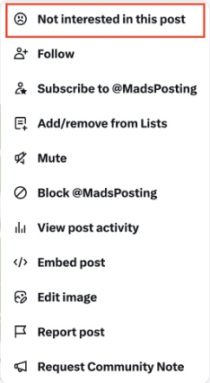
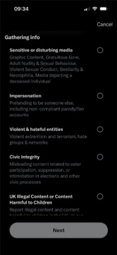
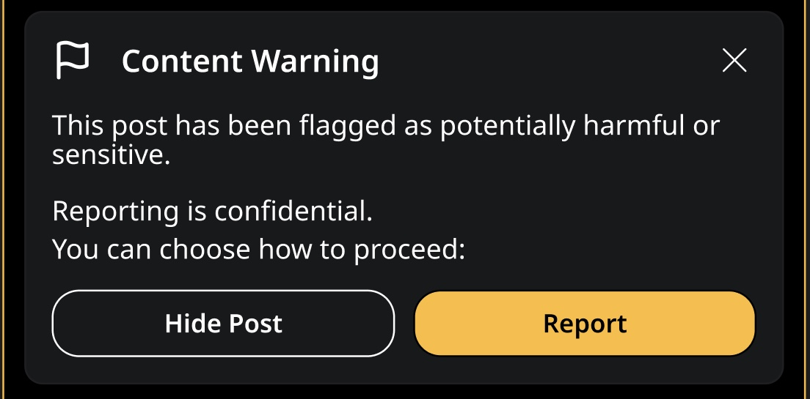
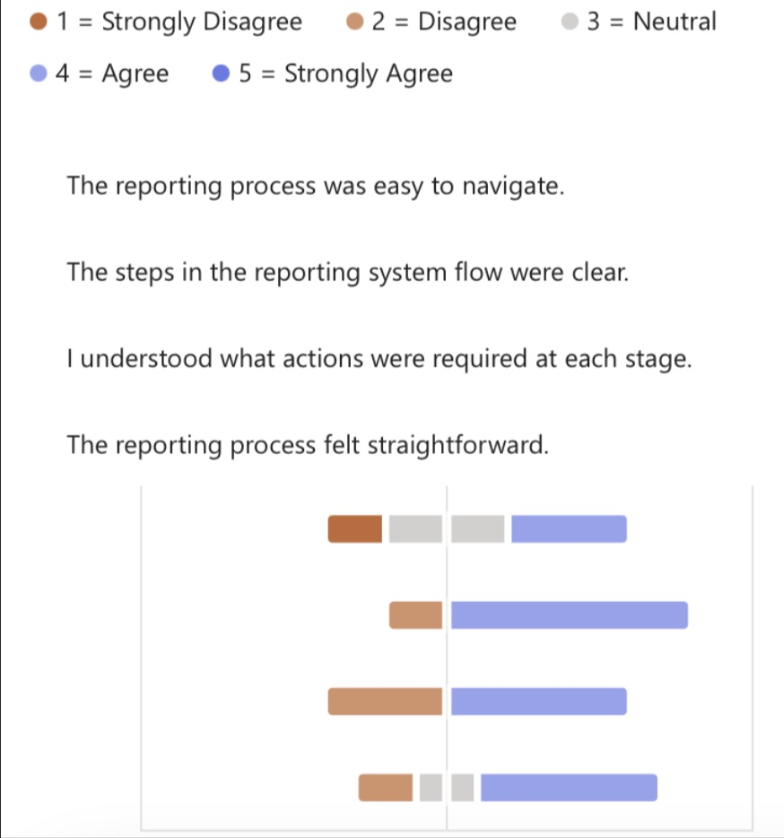
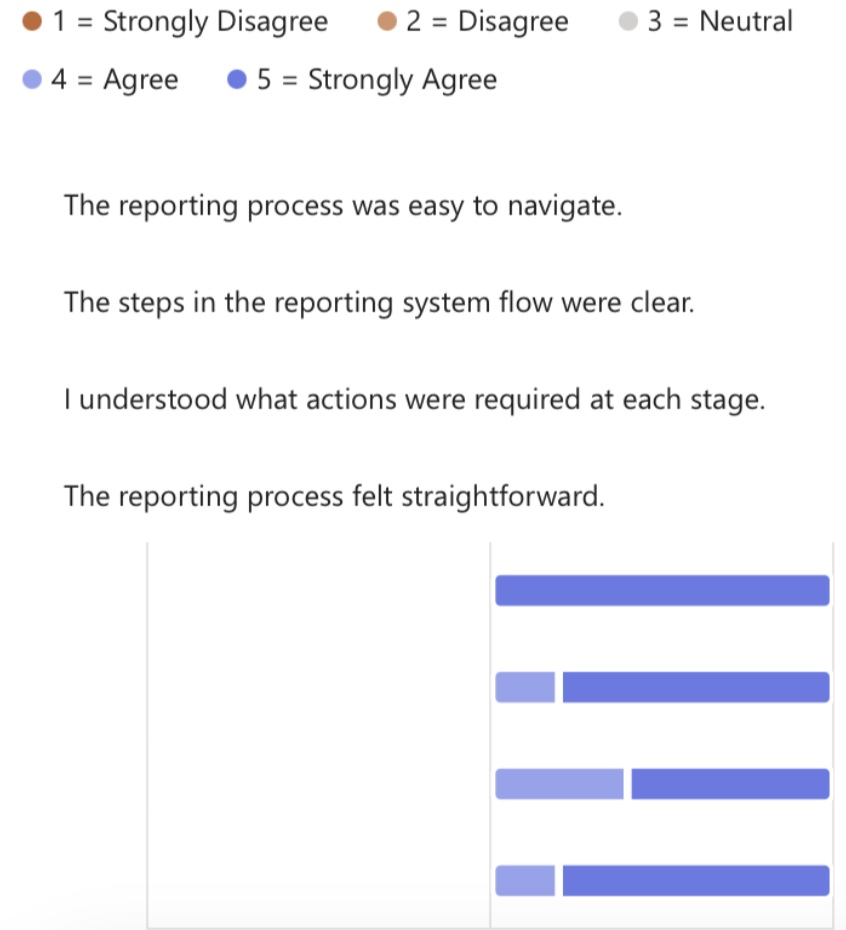
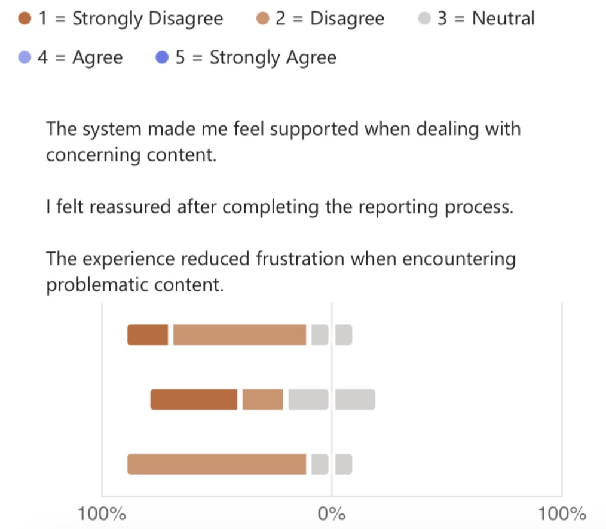
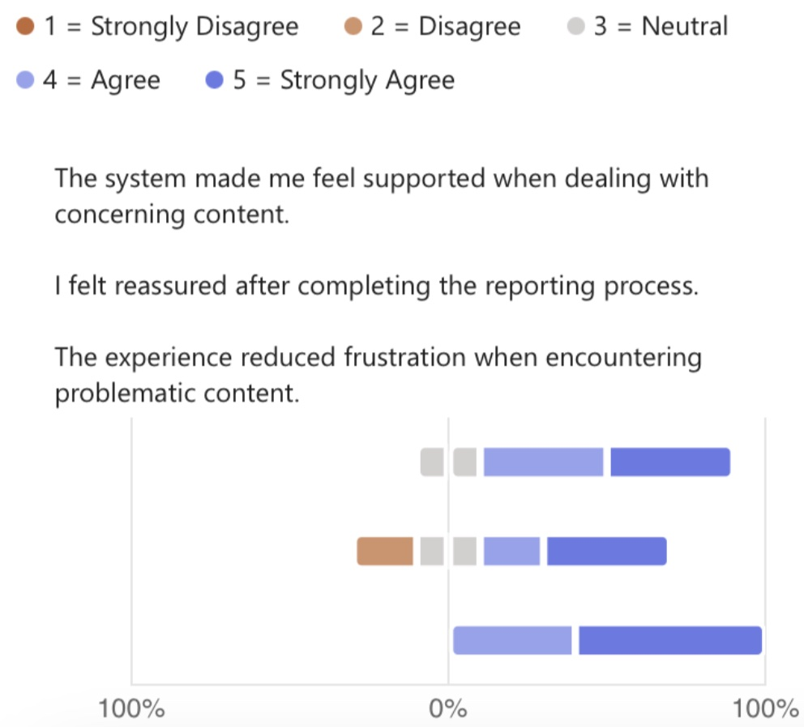
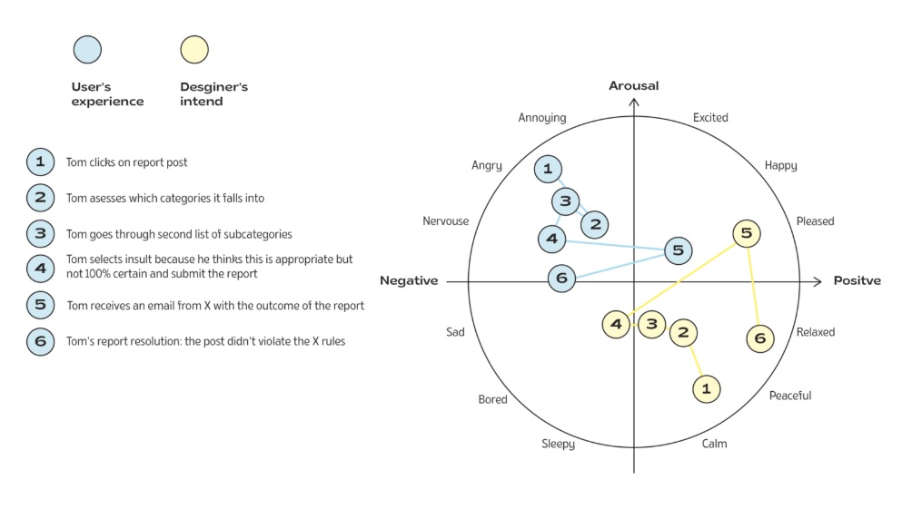

For the Applied Usability module of my MSc at Glasgow Caledonian University, our team studied how the reporting system on X (formerly Twitter) affects users' ability and willingness to report harmful content. We compared the current system with our redesign in a UX lab, using eye-tracking and facial expression analysis.
- Prototype Designer in a team of four, with Gordana Trayanovska, Punyisa Kanpana and Emily Reimer.
- Built Prototypes A and B in Figma.
- Ran both prototype usability tests and helped set up the UX lab.
- Wrote the Prototype and Discussion sections.
Reporting a post on X means finding an option hidden in a drop-down menu, then working through several pages of categories, often while upset by what you've just seen.
- Gulf of Execution: Users want to act fast, but the system demands effort and decisions.
- Gulf of Evaluation: After reporting, users don't know what happens next.
- Emotional gap: Mapped on Russell's Circumplex Model, the designers' intended calm becomes
anger and frustration.
- Visible action: A clear Report button next to flagged content, instead of a hidden menu.
- Two clicks: Report first, with optional details afterwards, to reduce cognitive load.
- Content warning: Light highlighting of potentially harmful posts, with a reminder that
reporting is confidential.
- Grounded in heuristics: Visibility of system status and recognition rather than recall.
- Prototype A: Facial analysis showed anger, contempt and frustration. Participants new to X
couldn't find the report button at all.
- Prototype B: Emotional reactions dropped once the warning and Report button appeared.
Participants found it more efficient and intuitive, and felt more confident and supported.
- Next steps: Both versions lacked feedback after reporting, which affected trust. A larger
study would test more diverse participants on their own phones.



2 of 5
participants could find the report button on X. Those new to X couldn't find it at all.
1 of 5
had ever reported harmful content, even though all of them had seen it.
2 clicks
to report in the redesign, which participants found clearer, faster and more supportive.




Orange bars show participants who disagreed, blue bars show those who agreed.
